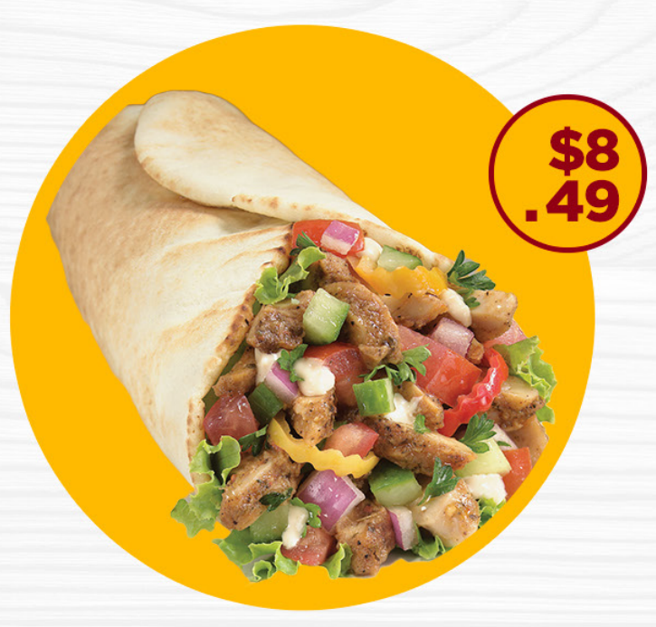

Beef shawarma is a rich, flavorful wrap made from thinly sliced marinated beef,
grilled or roasted until tender. It is famous for its deep smoky aroma,
savory taste, and satisfying texture. This variety is perfect for meat lovers
who want a bold and hearty shawarma experience.

Recipe Ingredients
Thinly sliced beef
Shawarma bread or pita
Garlic sauce or mayonnaise
Sliced onions
Fresh tomatoes
Cucumber strips
Cabbage or lettuce
Paprika
Black pepper
Curry powder
Salt
Vegetable oil
Preparation Procedure
Slice beef into very thin strips.
Mix spices, salt, oil, and seasoning in a bowl.
Add beef and mix thoroughly.
Allow to marinate for 2–4 hours for best flavor.
Heat pan or grill and cook beef until browned.
Warm shawarma bread slightly.
Spread sauce on bread.
Add vegetables and cooked beef.
Wrap tightly and heat briefly on pan for crisp texture.
serving
The finished beef shawarma is juicy, smoky, and richly seasoned.
Each bite delivers a balance of tender meat, fresh vegetables,
and creamy sauce wrapped in warm bread. Best served hot with fries
or a cold drink.
Serving Suggestion
Serve with potato fries, chili sauce, or yogurt dip for a complete
restaurant-style meal experience.